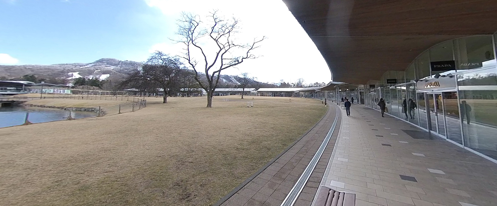
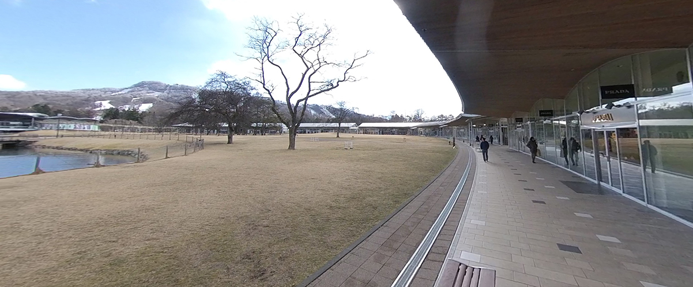

←スマホからご覧になる場合はこちらから
ブランドの廃番品やサンプル商品などを、お手頃価格で購入できるアウトレット店等がいっぱい。
イーストには24の店があり、うちアウトレットは16店。ニューウエストには
イタリアブランドのセレクトショップも豊富で68店、うちアウトレット56店。
ニューウエスト奥のウエストには生活雑貨やお土産店が29店舗も。
軽井沢の定番、広大なショッピングモール。
その他には夏は避暑地として、野鳥に会える施設や自然に囲まれたカフェを楽しんだり
冬は寒いがスキーやスノーボードを始めとしたウインタースポーツ
珍しいものだとカーリングを楽しめる施設がある。